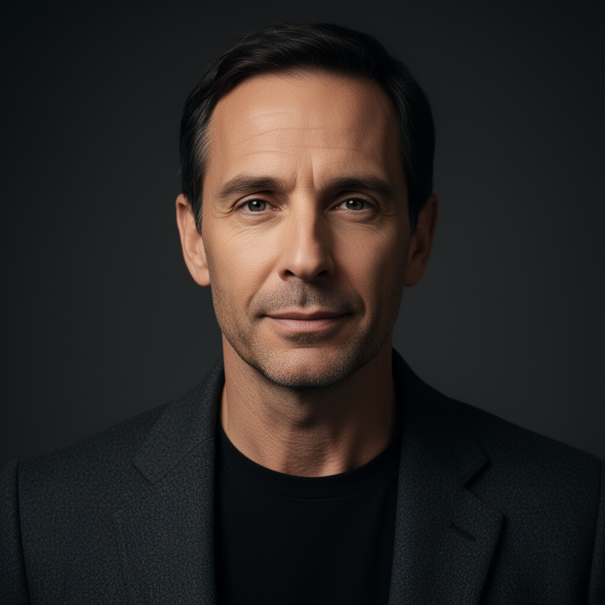

Source portrait

This page assigns no viewing verdict. Compare each source portrait with the generated clip and inspect identity, mouth movement, expression, flicker and background stability directly. Automatic measurements are reported separately in the results.
Speech: “At first light, the city seems almost still. Delivery trucks turn onto empty streets, kitchen lights come on, and the day begins before most people notice.”

Short three-second feasibility run, 512×512 at 25 fps.
Six-second lip-sync edit, 768×768 at 25 fps.
Six-second lip-sync edit, 768×768 at 25 fps.
Generative performance, 640×640 at 25 fps. The 81 generated frames produce 3.24 seconds at the saved frame rate.
Speech: “We tend to imagine progress as a straight road. In practice, it is a series of detours, revisions, and decisions made with incomplete information.”
Six-second generative talking-head run, 512×512 at 25 fps.
Speech: “The sea was calm that morning, which should have warned us. Out there, calm water often means something below is listening.”
No clip: the model's face detector rejected the non-human character. This is retained as a reproducible compatibility result.
Six-second audio-driven animal animation, 512×512 at 25 fps. No listening or naturalness verdict is assigned.
Three-second motion transfer from the official 78-frame driving fixture, 512×512 at 25 fps. This clip evaluates controlled character motion, not speech synchronization.
No public clip. The five-second local run is retained in the measured results, but the Tencent Hunyuan Community License Agreement excludes the European Union, where the benchmark machine is located. The generated media is therefore not redistributed here.
Five-second audio-driven generative performance, 640×640 at 16 fps, produced by the native ComfyUI implementation with dynamic offload. No viewing or naturalness verdict is assigned.